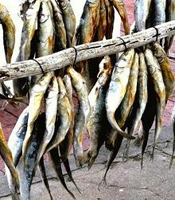

This fish is native to costal waters around the southern tip of Africa and off the west coast of Madagascar. It can grow to 18 inches but is more commonly around 12 inches. It was much used by early Dutch settlers in South Africa, but was probably already much used by the natives. It is fished commercially, and IUCN listed as NE (Not Evaluated). Details and Cooking. Photo by Frederick Hermanus Van der Bank, University of Johannesburg Contributed to the Public Domain.
More on Mullets.

General: This mullet is very much like the
Gray Mullet, so that page should be
valid for this fish.
Cooking: In South Africa this fish is most often
salted and dried, whence it is called "Bokkom", and it is sometimes
smoked. I also have a recipe from the early Dutch settlers of South
Africa that pickles it as "Herring".
Photo by Marzannej distributed under license Creative
Commons
Attribution-ShareAlike v3.0 Unported.